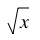
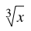
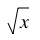
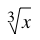
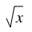
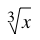
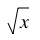
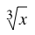

 



Resize the browser window and see what happens. View the page source. All <cvm> nodes are replaced with a canvas containing a rendering of the math in the element. The math is written in human readable syntax.
The following expression is selectable:
The following expression is editable:
This one is neither selectable nor editable:
We know well that
Matrices are important two: